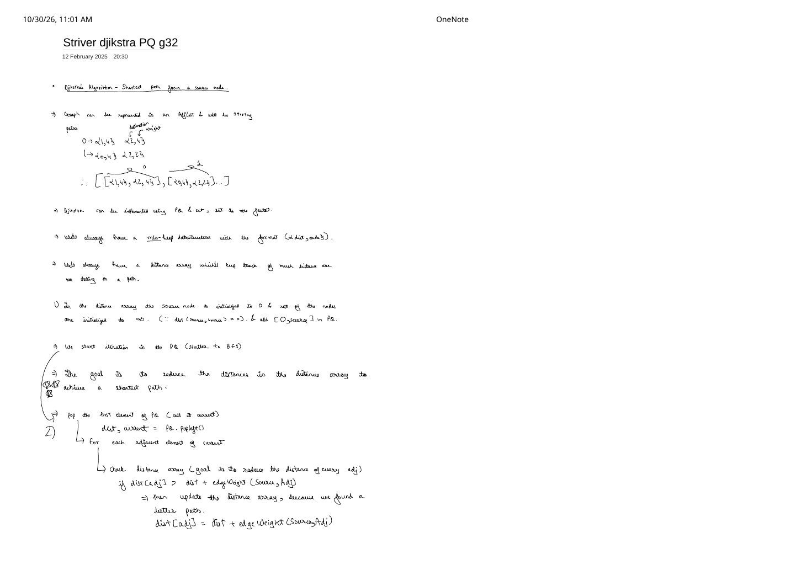
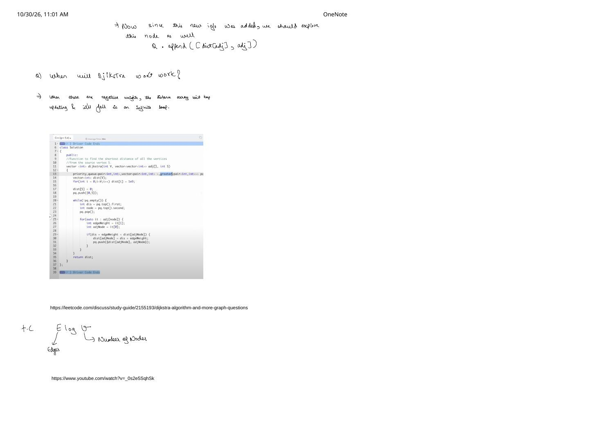

Dijkstra's Algorithm Using a Min-Heap Priority Queue (Striver G-32)
Expanded from handwritten competitive coding study note: 02_Striver_djikstra_PQ_g32.pdf
Given a weighted graph (directed or undirected) with non-negative edge weights ($w(u, v) \ge 0$) and a starting vertex S, Dijkstra's algorithm computes the shortest path distance from S to every vertex in the graph in $\mathcal{O}(E \log V)$ time. It is the workhorse single-source shortest-path (SSSP) algorithm in competitive programming whenever unit-weight BFS no longer applies.
1. Problem Setup & Adjacency-List Representation
Following page 1 of the handwritten notes, we store a weighted graph in an adjacency list where index u holds pairs of {destination, weight}:
0 → {1, 4}, {2, 4}1 → {0, 4}, {2, 2}adj = [ [{1, 4}, {2, 4}], [{0, 4}, {2, 2}], ... ]
Notice the subtle ordering difference between the adjacency list and the heap! In the adjacency list we store {adjNode, edgeWeight} (or {it[0], it[1]} in GFG's driver), whereas inside the min-heap priority queue we always store pairs in the reverse order {distance, node}:
- Distance array
dist[0..V-1]: Tracks the best cumulative distance discovered so far to each vertex. Initializedist[S] = 0(since $\text{dist}(S, S) = 0$) anddist[i] = ∞(1e9orLLONG_MAX) for all $i \neq S$. - Min-heap priority queue
pq: Initialized with{0, S}. Because C++ comparesstd::pairlexicographically by.firstbefore.second, puttingdistancefirst guaranteespq.top()always yields the frontier vertex with the minimum tentative distance.
2. Brute $\to$ Better $\to$ Optimal: Why a Min-Heap?
Why do we specifically need a min-heap instead of a plain BFS queue, an unindexed array scan, or a balanced BST (std::set)?
| Frontier Structure | How Next Node Is Chosen | Worst-Case Time | Tradeoff & Contest Verdict |
|---|---|---|---|
Plain FIFO std::queue |
Pop oldest arrival (BFS order), re-push whenever dist[v] improves |
$\mathcal{O}(V \cdot E)$ (up to $\mathcal{O}(2^V)$ on contrived DAGs) | Slow / TLE: Expanding a high-cost direct edge $0 \xrightarrow{100} 2$ before a cheaper 2-hop path $0 \xrightarrow{1} 1 \xrightarrow{1} 2$ forces the entire subtree below $2$ to be relaxed multiple times! |
| Unindexed Array Scan | Linear scan over all $V$ unvisited vertices to pick minimum dist[u] |
$\mathcal{O}(V^2 + E)$ | Dense-only: Optimal on dense adjacency matrices ($E \approx V^2$, $V \le 3000$), but TLEs when $V = 10^5$. |
std::priority_queue (Min-Heap) |
Binary heap top + 1-line lazy deletion if (dis > dist[u]) continue; |
$\mathcal{O}(E \log V)$ | Default Contest Choice: Contiguous std::vector memory, cache-friendly, zero heap node allocations. |
std::set<pair<int,int>> |
Red-Black Tree *st.begin() + eager st.erase({dist[v], v}) |
$\mathcal{O}(E \log V)$ | Same asymptotics: Keeps size $\le V$ by erasing stale entries immediately (why page 1 notes set avoids stale duplicates), though RB-tree pointer chasing has a slightly larger constant factor than priority_queue in C++. |
Greedy Settlement Invariant (Why Min-First Popping Settles Each Vertex Once)
Suppose all edge weights satisfy $w \ge 0$, and the min-heap pops (d, u) with $d = \text{dist}[u]$. Could some unpopped path from $S$ later reach $u$ with cost strictly less than $d$?
No! Any path from $S$ to $u$ that has not yet been fully explored must leave the already-settled region through some currently queued frontier vertex $x$. Because (d, u) was the minimum element in the heap, $\text{dist}[x] \ge d$. Since every subsequent edge along $x \rightsquigarrow u$ has weight $\ge 0$, that path's total cost is at least $\text{dist}[x] + 0 \ge d$. Therefore dist[u] = d is permanently optimal the very first time $u$ is popped!
3. Step-by-Step Dry Run (Striver G-32 Benchmark Graph)
Let us trace the two-step loop from pages 1–2 of the notes — pop (dis, current), test if (dis + edgeWeight < dist[adj]), update dist[adj], and push {dist[adj], adj} — on the 6-vertex graph ($V = 6$, source $S = 0$):
dist[5] starts at $\infty$, relaxes to $10$ via $0 \to 2 \to 5$, improves to $8$ via $0 \to 2 \to 4 \to 5$, and ignores the stale pair (10, 5) when it eventually surfaces.| Step | Popped {dis, node} |
Neighbor Checks & Relaxations | dist[0..5] |
Min-Heap After Step |
|---|---|---|---|---|
| Init | — | dist[0] = 0, push {0, 0} |
[0, ∞, ∞, ∞, ∞, ∞] |
{(0, 0)} |
| 1 | (0, 0) |
$1$: $0+4 \lt \infty \implies 4$ $2$: $0+4 \lt \infty \implies 4$ |
[0, 4, 4, ∞, ∞, ∞] |
{(4, 1), (4, 2)} |
| 2 | (4, 1) |
$0$: $4+4 \not\lt 0$ $2$: $4+2=6 \not\lt 4$ |
[0, 4, 4, ∞, ∞, ∞] |
{(4, 2)} |
| 3 | (4, 2) |
$3$: $4+3=7 \lt \infty$ $4$: $4+1=5 \lt \infty$ $5$: $4+6=10 \lt \infty$ |
[0, 4, 4, 7, 5, 10] |
{(5, 4), (7, 3), (10, 5)} |
| 4 | (5, 4) |
$2$: $5+1 \not\lt 4$ $5$: $5+3=8 \lt 10$ ✓ (push {8, 5}) |
[0, 4, 4, 7, 5, 8] |
{(7, 3), (8, 5), (10, 5)} |
| 5 | (7, 3) |
$2$: $7+3 \not\lt 4$ $5$: $7+2=9 \not\lt 8$ |
[0, 4, 4, 7, 5, 8] |
{(8, 5), (10, 5)} |
| 6 | (8, 5) |
$2, 3, 4$ all fail to improve | [0, 4, 4, 7, 5, 8] |
{(10, 5)} |
| 7 | (10, 5) |
10 > dist[5] (8) $\implies$ skipped via lazy check! |
[0, 4, 4, 7, 5, 8] |
{} (done) |
4. Why Dijkstra Fails on Negative Edge Weights (Page 2)
Q) When Will Dijkstra Not Work?
As highlighted directly on page 2 of the handwritten notes: when the graph contains negative weights, the distance array keeps updating and falls into an infinite loop (on negative cycles) — or produces wrong answers / exponential re-expansions even without negative cycles!
- Case A — Undirected Negative Edge $\implies$ Immediate Infinite Loop:
Consider two nodes connected by an undirected edge $0 \leftrightarrow 1$ of weight $-2$. Starting withdist = [0, ∞]andpq = {(0, 0)}:
Pop(0, 0)$\implies$dist[1] = -2, push(-2, 1)
Pop(-2, 1)$\implies$dist[0] = -4 < 0, push(-4, 0)
Pop(-4, 0)$\implies$dist[1] = -6 < -2, push(-6, 1)$\dots$ never terminates! - Case B — Directed Negative Edge Without Any Cycle $\implies$ Broken Greedy Invariant:
Suppose $0 \xrightarrow{2} 1$, $0 \xrightarrow{5} 2$, and $2 \xrightarrow{-4} 1$. Dijkstra pops(2, 1)before(5, 2)and declares $1$ "settled" at cost $2$ — completely missing that going $0 \to 2 \to 1$ has total weight $5 + (-4) = 1 \lt 2$! If you prohibit re-expanding settled nodes you get a Wrong Answer; if you allow re-expanding settled nodes, adversarial chains of negative-edge diamonds force $\mathcal{O}(2^V)$ pops (TLE). Use Bellman–Ford whenever $w \lt 0$ can occur.
5. Clean C++ Implementation
Below is the exact GeeksforGeeks / Striver G-32 C++ signature from page 2's code screenshot, upgraded with the 1-line stale check if (dis > dist[node]) continue;:
#include <bits/stdc++.h>
using namespace std;
class Solution {
public:
// Function to find the shortest distance of all the vertices from the source vertex S.
// GFG G-32 format: adj[node] holds 2-element vectors {adjNode, edgeWeight}
vector<int> dijkstra(int V, vector<vector<int>> adj[], int S) {
using P = pair<int, int>; // {distance, node}
priority_queue<P, vector<P>, greater<P>> pq;
const int INF = 1e9;
vector<int> dist(V, INF);
dist[S] = 0;
pq.push({0, S});
while (!pq.empty()) {
int dis = pq.top().first;
int node = pq.top().second;
pq.pop();
// Lazy deletion: skip stale heap entries superseded by a shorter path
if (dis > dist[node]) continue;
for (const auto& it : adj[node]) {
int adjNode = it[0];
int edgeWeight = it[1];
if (dis + edgeWeight < dist[adjNode]) {
dist[adjNode] = dis + edgeWeight;
pq.push({dist[adjNode], adjNode});
}
}
}
return dist;
}
};6. Time & Space Complexity Proof ($\mathcal{O}(E \log V)$)
Why Is Min-Heap Dijkstra $\mathcal{O}(E \log V)$ Rather Than $\mathcal{O}(E \log E)$?
- Total Heap Operations: With the lazy check
if (dis > dist[node]) continue;, each vertex $u \in [0, V - 1]$ executes its neighbor loop at most once. Summing $\deg(u)$ across all vertices inspects at most $2E$ edge endpoints (or $E$ in a directed graph). Each edge inspection triggers at most onepq.push, so the heap processes at most $1 + 2E = \mathcal{O}(E)$ pushes and pops. - Cost Per Heap Operation: Even if stale duplicates cause the binary heap size $H$ to grow toward $E$, in any simple graph (no parallel duplicate edges) $E \le V(V - 1) \lt V^2$. Taking logarithms:
$$\log_2 H \;\le\; \log_2 E \;\lt\; \log_2(V^2) \;=\; 2 \log_2 V \;=\; \mathcal{O}(\log V)$$
(Even in multigraphs with parallel edges, keeping only the lightest parallel edge pre-filters $E$ down to $\le V^2$, or using
std::setbounds container size strictly by $V$.) - Total Time & Space: $\mathcal{O}((V + E)\log V)$ — written compactly as $\mathcal{O}(E \log V)$ on connected graphs where $E \ge V - 1$. Auxiliary space is $\mathcal{O}(V + E)$ for
dist[]and the heap.
7. Key Edge Cases & Practical Nuances
- Swapped Pair Order (
{node, dist}Bug): Pushing{node, dist}instead of{dist, node}still gives a correct answer (because every improvement eventually relaxes), which makes it pass small sample tests — while silently degrading runtime from $\mathcal{O}(E \log V)$ to exponential / $\mathcal{O}(V \cdot E)$ on large test cases! - Zero-Weight Edges ($w = 0$): Unlike negative weights, $w = 0$ is completely safe for standard shortest-distance Dijkstra because $\text{dist}[x] + 0 \ge \text{dist}[x]$ still preserves the greedy non-decreasing heap invariant. (Only path-counting problems like LeetCode 1976 require $w \gt 0$ so zero-weight cycles cannot create infinitely many shortest paths.)
- Unreachable Vertices: Any vertex in a component disconnected from
Sretains its initial sentinel (1e9); check problem statements to convert1e9to-1before returning if required. - Reconstructing the Actual Shortest Path: Add
vector<int> parent(V, -1), setparent[adjNode] = nodeinsideif (dis + edgeWeight < dist[adjNode]), and walk backward from target $T$ to $S$ viaparent[]before reversing.
From the Handwritten Notes
View original handwritten page — Striver G-32 Page 1: Adjacency pairs, min-heap setup & relaxation step


02_Striver_djikstra_PQ_g32.pdf: Pair adjacency format {destination, weight}, PQ vs set note, min-heap ({dist, node}) invariant, and step-by-step relaxation rule.View original handwritten page — Striver G-32 Page 2: Negative-weight failure, C++ code & $\mathcal{O}(E \log V)$ complexity


02_Striver_djikstra_PQ_g32.pdf: Pushing relaxed neighbors to PQ, why negative weights trigger infinite loops, GFG C++ solution, and $E \log V$ breakdown.